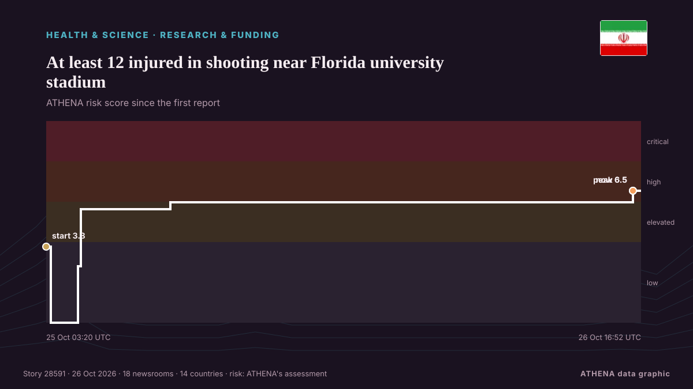

At least 12 injured in shooting near Florida university stadium

Police count six adults, six juveniles among injured as initial findings show physical altercation preceded shooting. de Express Tribune
Informado de forma independiente por 18 medios de 14 países desde el 25 oct; el primero fue Express Tribune; la cobertura sigue extendiéndose. ATHENA califica el riesgo como alto (6.6/10), sobre todo por la gravedad del daño descrito y su alcance geográfico y sectorial. La confianza es del 87 % (alta): lo corroboran 18 medios independientes, con una fiabilidad media de las fuentes del 75 %.
Por qué importa: Los hechos de salud y ciencia pueden cambiar los riesgos para la salud pública, las prioridades de investigación y la regulación.
Qué ha cambiado: 4 informaciones nuevas de 4 redacciones en las 24 horas hasta el 26 oct.
Primer titular: Eleven shot near Florida A&M university in Tallahassee
Los titulares se muestran en inglés, tal como se publicaron.
De un vistazo
Seleccionado, puntuado y redactado por la metodología publicada de ATHENA. Ningún editor interviene en eventos concretos. Cómo se elabora ›
| 25 Oct 01:29 UTC | 2 |
|---|---|
| 25 Oct 03:29 UTC | 5 |
| 25 Oct 05:29 UTC | 9 |
| 25 Oct 07:29 UTC | 1 |
| 25 Oct 09:29 UTC | 0 |
| 25 Oct 11:29 UTC | 0 |
| 25 Oct 13:29 UTC | 0 |
| 25 Oct 15:29 UTC | 2 |
| 25 Oct 17:29 UTC | 0 |
| 25 Oct 19:29 UTC | 0 |
| 25 Oct 21:29 UTC | 0 |
| 25 Oct 23:29 UTC | 0 |
| 26 Oct 01:29 UTC | 0 |
| 26 Oct 03:29 UTC | 0 |
| 26 Oct 05:29 UTC | 0 |
| 26 Oct 07:29 UTC | 0 |
| 26 Oct 09:29 UTC | 0 |
| 26 Oct 11:29 UTC | 1 |
| 26 Oct 13:29 UTC | 0 |
| 26 Oct 15:29 UTC | 3 |
| 25 Oct 03:20 UTC | 3.8 |
|---|---|
| 25 Oct 03:38 UTC | 0.0 |
| 25 Oct 05:19 UTC | 2.8 |
| 25 Oct 05:30 UTC | 5.6 |
| 25 Oct 11:10 UTC | 6.0 |
| 26 Oct 16:20 UTC | 6.5 |
| 26 Oct 16:52 UTC | 6.6 |
Por qué estas cifras
Importancia
Riesgo
Confianza
La cobertura: quién informó y cuándo
titular tal como se publicó · abre el original- Express Tribune · Pakistán · Pakistan11 shot near Florida A&M university in Tallahassee
- Xinhua (English) — page reader · ChinaUrgent: Police investigating shooting in Florida university
- Anadolu Agency (English) · Turquía · Turkey11 shot, 1 more injured near Florida university stadium: Police
- Mehr News (English) · Irán · IranVIDEO: Shooting at Florida State University, dozens injured
- Times of India · India6 children among 12 injured in shooting near Florida university stadium
- NDTV · India12, Including 6 Children, Injured In Shooting Near Florida University
- Cyprus Mail · Chipre · CyprusEleven shot near Florida A&M university in Tallahassee
- The Jerusalem Post · IsraelAt least 12 injured in late-night shooting near Florida A&M University stadium in Tallahassee
- Arab News · Arabia Saudí · Saudi ArabiaEleven shot near Florida A&M university in Tallahassee
- Xinhua (English) — page reader · ChinaAt least 12 injured in shooting near Florida university stadium
- Gulf News · Emiratos Árabes Unidos · United Arab EmiratesAt least 12 people injured in shooting near a football stadium in Florida
- The Guardian · Reino Unido · United KingdomTwelve injured, including six juveniles, in shooting near Florida university
- Daily Mirror · Sri LankaAt least 12 people injured in shooting near a football stadium in Florida
- Asharq Al-Awsat (English) · Arabia Saudí · Saudi ArabiaEleven Shot near Florida A&M University in Tallahassee
- The Straits Times · Singapur · Singapore11 people shot at homecoming party near Florida university campus
- The Independent · Reino Unido · United KingdomAt least 12 injured, including six kids, after mass shooting near Florida A&M University
- Khaama Press · Afganistán · Afghanistan12 Injured, Including Six Minors, in Shooting Near Florida A&M University
- The Independent · Reino Unido · United Kingdom15-year-old boy arrested after 11 are shot, including kids, near Florida A&M stadium
- The Guardian · Reino Unido · United KingdomFifteen-year-old arrested in shooting near Florida university that injured 12
- BBC News · Reino Unido · United KingdomPolice arrest teenager after shooting that injured 12, including children, in Florida
- Nile Post · UgandaPolice arrest teenager after shooting that injured 12, including children, in Florida